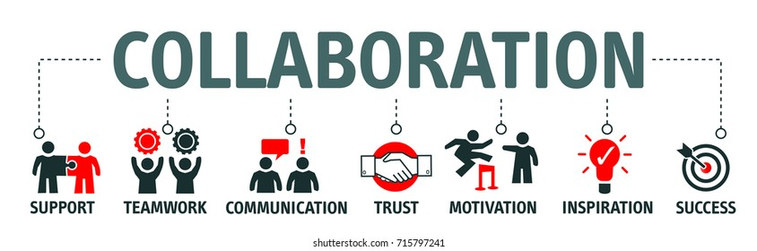

A Few Thoughts
Reproducability
There does not seem to be a lot of information regarding the value of reproducability for restoration planning and from
our perspective that is a major opportunity for progress… For example - the use of scripts to automate workflows and
the sharing of workflows online. From our perspective, there is extraordinary value in using scripts and packages to
automate workflows and promote collaboration. Rather than each professional doing their own analysis on their own custom
datasets with many ad-hoc workflows it should be encouraged that professionals move towards well documented -
reproducible open-source programming workflows using scripting languages like R, sql and python. Examples of the
types of packages that can be used to automate workflows are presented
here.
Software Tools for Reproducability
Although many of the resources in the above linked csv are reports (containing scripted workflows) there are also many
stand-alone software tools. An example of a tool key for reproducible workflows is
bcdata [norris2024smnorrisbcdata] which is a package that allows the user to
access data from the BC Data Catalogue. This package can be used to build a mirror
of government data that is used in projects. Because the loading of data to a postgres database is done automatically
and the names of the data schemas and tables are equivalent to those served out by the province - GIS analysis is
portable and analysis can be rerun with fresh data over time. This facilitates collaboration and reproducability on a
level that is not achievable without much more effort and skill than is required when not using a tool such as this.
Other key tools include fwapg [norris2024smnorrisfwapg] and
bcfishpass [norris2024smnorrisbcfishpass] among others.
There are many wonderful conceptual workflows presented in the Wildfire Restoration Playbook and some text that indicates that investments should be made so these workflows can be automated and shared openly to the greatest extent possible would be a great addition to the document. A great example of a conceptual workflow that could be automated (with the help of packages like bcdata!) is Presented in Figure 24 - “Conceptualization of combining spatial data (GIS) on hazards and consequences to visualize wildfire risk on a single 2-dimensional wildfire “risk map”. Adapted from Alwathaf and Mansouri (2011).”
Open Source - Iterative Reporting
There is a key question we have been asking ourselves lately and that is
“What is the most useful way to present information?”
From our perspective - the most useful way to present information is in a version controlled format that allows it to be interactive, reproducible, read online, served out as a static document, updated, copied, used as a template, etc. Iterative reporting, managed with a version control system such as git with a permissive license is a great way to do all those things. Although there is a steep learning curve to using programming tools and producing this type of product and although it can be quite time consuming - it then allows leveraging of all the components of the work to future projects for everyone. Licenseing is also key and should be considered. Here is an example of a license that promotes collaboration and sharing/leveraging of work.
From our perspective - the playbook is the type of document that is well suited to an iterative reporting format such as can be demonstrated within this code repository which builds and serves this online report. We would like to suggest that in future iterations, it be considered that the playbook is converted to a dynamic document because:
Tables and Figures
There are an incredible number of tables within the document that may have taken a very long time to format. We suggest the tables be converted to simple csvs or pages of an excel workbook and pulled into the project using scripts. This would allow others to access the data and use it in their own projects. The tables could also then be easily updated with new data as it becomes available and the formatting would be handled by the scripting. An example of this can be seen here in Table 1 with the actual file served here:
| Resource | URL | Details |
|---|---|---|
| bcfishpass | https://github.com/smnorris/bcfishpass | Build and maintain an aquatic connectivity / fish passage database for British Columbia to track known barriers to fish passage, model potential barriers to fish passage, model passability/accessibility of streams based on species swimming ability, model streams with potential for spawning and rearing activity, etc |
| fpr | https://github.com/NewGraphEnvironment/fpr | Fish Passage Reporting functions for British Columbia. R package used for cleaning, transforming and extracting data to build interactive reports related to fish passage planning including fish passage assessments and habitat confirmation assessments at road-stream crossings. In |
| dff-2022 | https://github.com/NewGraphEnvironment/dff-2022 | Building digital field forms for field work in British Columbia, mobile QGIS projects and processing data collected using standardized provincial data layer and data collection templates. Utilizes open source software including R, python, bash and QGIS and others. |
| rfp | https://github.com/NewGraphEnvironment/rfp | Reproducible Field Projects for British Columbia. R package to standardize and track the creation of collaborative GIS projects for aquatic restoration/conservation planning and field work. Under development incorporating many dff-2022 scripts into R package functions. |
| Restoration Framework | https://github.com/NewGraphEnvironment/restoration_framework | Public repository for development of and linking to restoration / conservation planning tools and concepts. |
| Restoring Fish Passage in the Peace Region 2023 | https://newgraphenvironment.github.io/fish_passage_peace_2023_reporting/ | REPORT NOT YET LIVE (20240220). Interactive reporting for 2023 fish passage restoration planning activities in the Parsnip, Carp and Crooked Watershed Groups north of Prince George in the Peace Region. Designs completed for two crossings in the Table River watershed (Parsnip River watershed group) and materials purchased for remediation. Phase 1 and Phase 2 assessments in Carp and Crooked watershed groups. Fish sampling with PIT tagging conducted in Parsnip River watershed group. Aerial imagery collected by drone. Repository located at https://github.com/NewGraphEnvironment/fish_passage_peace_2023_reporting |
| Restoring Fish Passage in the Peace Region 2022 | https://newgraphenvironment.github.io/fish_passage_peace_2022_reporting/ | Interactive reporting for 2022 fish passage restoration planning activities in the Parsnip, Carp and Crooked Watershed Groups north of Prince George in the Peace Region. Includes interactive planning dashboard. Crossing in Missinka watershed replaced and design done for site on Chuchinka-Arctic FSR. Fish sampling with PIT tagging conducted. Aerial imagery collected by drone. |
| Restoring Fish Passage in the Peace Region 2021 | https://newgraphenvironment.github.io/fish_passage_parsnip_2021_reporting/ | Interactive reporting for 2021 fish passage restoration planning activities in the Parsnip Watershed Group north of Prince George in the Peace Region. Includes interactive planning dashboard and . |
| Parsnip_Fish_Passage | https://newgraphenvironment.github.io/Parsnip_Fish_Passage/ | Interactive reporting for 2019 fish confirmation assessments in the Parsnip Watershed Group north of Prince George in the Peace Region. Fish sampling conducted. Aerial imagery collected by drone. |
| Skeena Fish Passage Restoration Planning 2023 | https://newgraphenvironment.github.io/fish_passage_skeena_2023_reporting | REPORT NOT YET LIVE (20240220). Interactive reporting for Fish passage and habitat confirmation assessments in the Bulkey River, Morice River, Zymoetz River and Kispiox River watershed groups. Fish sampling conducted. Repository located at https://github.com/NewGraphEnvironment/fish_passage_skeena_2023_reporting |
| Skeena Fish Passage Restoration Planning 2022 | https://newgraphenvironment.github.io/fish_passage_skeena_2022_reporting | Interactive reporting for Fish passage and habitat confirmation assessments in the Morice River, Zymoetz River and Kispiox River watershed groups. Fish sampling conducted. |
| Bulkley River Watershed Group Fish Passage Restoration Planning 2022 | https://newgraphenvironment.github.io/fish_passage_bulkley_2022_reporting/ | Interactive reporting for fish passage assessments and habitat confirmation assessments at sites in the Bulkley River watershed group. Fish sampling with PIT tagging conducted. |
| Bulkley River and Morice River Watershed Groups Fish Passage Restoration Planning 2021 | https://newgraphenvironment.github.io/fish_passage_skeena_2021_reporting/ | Interactive reporting for Fish passage assessments and habitat confirmation assessments in the Bulkley River and Morice River watershed groups. Fish sampling conducted. |
| Bulkley River and Morice River Watershed Groups Fish Passage Restoration Planning 2020 | https://newgraphenvironment.github.io/fish_passage_bulkley_2020_reporting/ | Interactive reporting for fish passage assessments and habitat confirmation assessments in the Bulkley River and Morice River watershed groups. Fish sampling conducted. |
| Elk River Watershed Group Fish Passage Restoration Planning 2022 | https://newgraphenvironment.github.io/fish_passage_elk_2022_reporting/ | Interactive reporting for fish passage assessments and habitat confirmation assessments in the Elk River watershed group. Fish sampling, fish habitat assessment procedures, temperature monitoring and stream discharge measurements were conducted. |
| Elk River Watershed Group Fish Passage Restoration Planning 2021 | https://newgraphenvironment.github.io/fish_passage_elk_2021_reporting/ | Interactive reporting for fish passage assessments and habitat confirmation assessments in the Elk River watershed group. Fish sampling, fish habitat assessment procedures and temperature monitoring were conducted. |
| Elk River Watershed Group Fish Passage Restoration Planning 2020 | https://newgraphenvironment.github.io/fish_passage_elk_2020_reporting/ | Interactive reporting for fish passage assessments and habitat confirmation assessments in the Elk River watershed group. Fish sampling conducted. |
| Fraser Fish Passage Restoration Planning 2023 | https://newgraphenvironment.github.io/fish_passage_fraser_2023_reporting/ | REPORT NOT YET LIVE (20240220). Interactive reporting for fish passage assessments in the Nechacko River, Lower Chilako River, Francois Lake, Upper Fraser River and Mork River watershed groups. Repository at https://github.com/NewGraphEnvironment/fish_passage_fraser_2023_reporting |
| Richfield Creek Riparian Restoration 2022 | https://github.com/NewGraphEnvironment/fish_passage_bulkley_2022_reporting/raw/main/docs/SERN_Richfield_Fencing_2022_Final%20Report.pdf | Leveraging other investments in the watershed by Morice Watershed Monitoring Trust (streambank stabilization and riparian planting at four locations) and A Rocha Canada, we supported installation of 840m of cattle exclusion fence on previously unfenced areas of rangeland adjacent to high fisheries values in Richfield Creek. Installation of live cuttings in four distinct polygons covering 866m2 of riparian area. Use of drone to gather Lidar and temperature data to help inform future process-based restoration actions in the Upper Bulkley Watershed. |
| Richfield Creek Riparian Fencing 2021 | https://github.com/NewGraphEnvironment/fish_passage_skeena_2021_reporting/raw/master/docs/Attachment_4.pdf | Leveraging other investments in the watershed by Morice Watershed Monitoring Trust (streambank stabilization and riparian planting at four locations) we supported the installation of 1100 m of fencing on the west of Richfield Creek in in the Upper Bulkley Watershed. |
| fish-passage-22 | https://github.com/poissonconsulting/fish-passage-22 | Mapping stream discharge and temperature causal effects pathways to focus aquatic restoration actions in areas of highest potential for positive impacts on fisheries values. Includes scripts to download real-time hydrometric flow and temperature data as well as Pacific Climate Impact Consortium hydrometric data (modelled historic and projected) |
| fissr-explore | https://github.com/NewGraphEnvironment/fissr_explore | Exploratory analysis of provincial fish sampling dataset to explore utility for building evidence based approach to the parameters used to model the best habitat for individual fish species to help make decisions around where to invest in aquatic restoration activities |
| fissr-explore-21 | https://www.poissonconsulting.ca/f/1386346791 | Analysis of relationships between rainbow trout density (from province wide electrofishing dataset) , channel width and gradient |
| channel-width-21b | https://www.poissonconsulting.ca/f/859859031 | Modelled estimate of channel width based on watershed area and mean annual precipitation. Used to help estimate rearing and spawning suitability of streams for fish use by numerous species in . |
| bcdata | https://github.com/smnorris/bcdata | Simplifies downloads of BC geographic data () and DEMs. Integrates with postgres databases using schema and table names identical to those of the province. Allows real-time updates of datasets and collaborative sharing of scripts/workflows. |
| fwapg | https://github.com/smnorris/fwapg | Extends British Columbia’s Freshwater Atlas (FWA) with PostgreSQL/PostGIS to enable speedy upstream/downstream queries throughout BC, quickly and cleanly generate watershed boundaries upstream of arbitrary locations, enable quickly serving FWA features as vector tiles, etc. |
| bcfishobs | https://github.com/smnorris/bcfishobs | Locate up to date fish observation points as linear referencing events on the Freshwater Atlas. |
| bcbrat | https://github.com/smnorris/bcbrat | Experimental tool for generating BRAT project data for British Columbia watersheds. |
| roadintegrator | https://github.com/smnorris/roadintegrator | Merge multiple BC road datasets into a single layer for Cumulative Effects analysis |
| designatedlands | https://github.com/smnorris/designatedlands | Combine spatial data for 40+ designations that contribute to land management to create a single ‘Designated Lands’ layer for British Columbia |
| Fish Passage Maps | https://hillcrestgeo.ca/outgoing/fishpassage/projects/ | Georeferenced maps for all Skeena watershed groups, Elk River as well as the Parsnip River, Crooked, and Carp River watershed groups in the Peace Region. Can be imported to phone or table for navigation real-time in Avenza Maps. |
| Mergin Maps | https://github.com/MerginMaps | Geodata platform for hosting shared QGIS projects on the cloud and collecting field data through forms on phones and tablets. Open source software with paid plans to simplify setup and maintenance. Command line tools to interact with projects including for syncing and permissions. |
Any figures used in the reporting could be saved in the project and used by anyone else in their work to tell there own story and help their teams achieve their goals. An example of this can be seen here Table 1 with the actual file served here.
{kind=link}

The references in the Wildfire Restoration Playbook are incredible. There are so many and they are extremely valuble. Thank you. To maximize the value of these references, they should be tabulated within a references section at the end of the report and documented in a
.bibfile that can be imported and exported to and from a reference manager such asZoteroorMendeley. This would allow the references to be transferred all at once to others libraries so they can be used in other projects and updated as needed. An example of this can be seen here.The document is necessarily fairly lengthy longish and from some perspectives may be considered a touch difficult to navigate. It would be helpful to have the report served online with a table of contents on the left hand side that allows the reader to jump to each section. An example of this can be seen here. In this particular situation this is done useing the open source package
bookdownand the document is served by github pages.Although it requires a bit of gymnastics to get it set up the document can also be served in a way that allows the reader to download updated pdf versions of the report that are formatted for printing and suitable for upload to a central database such as
Ecocat. An example of this can be seen here where a download button at the top left of the document allows the user to download a pdf version of the report from this url.
### Collaborative GIS {-} Geographical Information Systems are essential for understanding restoration plans and the reasons they are required. Without the ability to visualize the landscape and the data that is used to make decisions it is difficult to communicate the need for restoration and the potential benefits. We suggest that the collaborative GIS environments be mentioned as a key tool for restoration planning. Although there are many tools for sharing spatial information we have been finding that Mergin Maps (source code here - which leverages the open source QGIS software - is a great tool for sharing spatial data, collaborating on spatial analysis and even collecting standardized data on our phones. Maybe worth a mention.